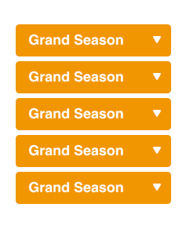
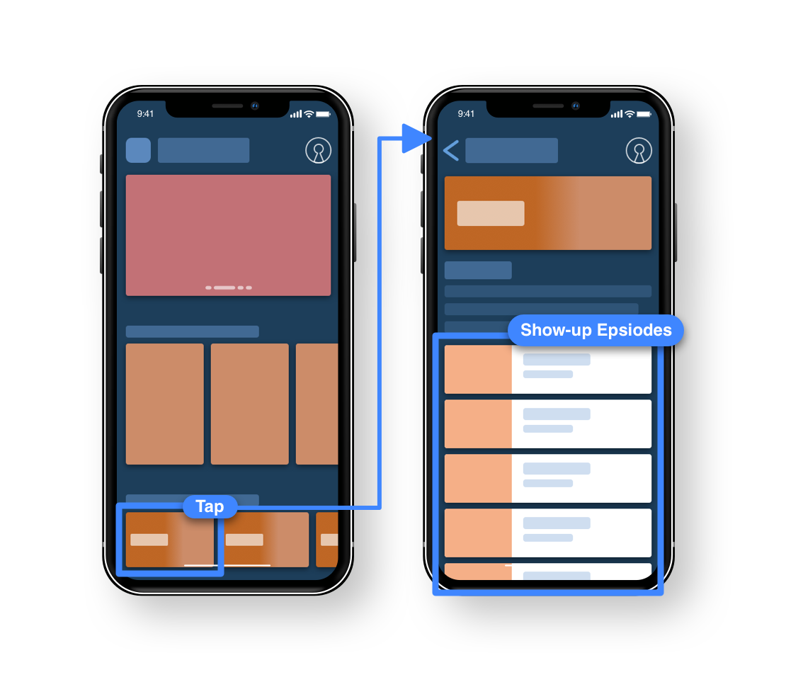
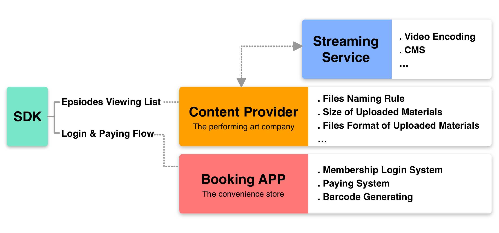
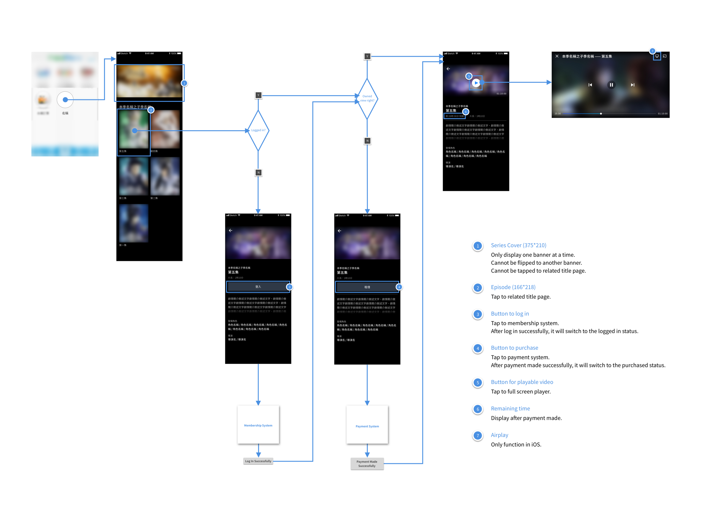
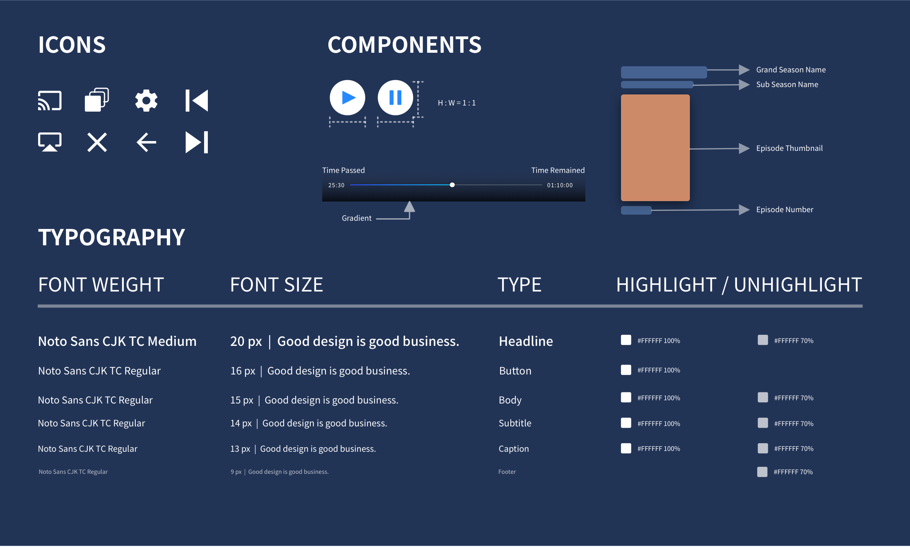

Streaming SDK for Taiwanese Art
OVERVIEW
A Taiwanese performing art has transformed the traditional heritage into a pop-cultural entertainment since years ago, however, the show was only available through cable broadcasters and DVD sold in convenience stores. Therefore, the retailer and the content owner were seeking the opportunity to launch the on-demand streaming service, which could be provided through the existing booking APP developed by the convenience store. Our team provided the full stack development and the streaming technique, and my role was to design the interface, which could guide the users smoothly through subscribing process and watching the show.
COLLABORATE WITH
Account Manager｜Andy Huang
Product Manager｜Chien Huang
Design Supervisor｜Ludan Chuang
Developers of iOS / Andorid
Product Manager｜Chien Huang
Design Supervisor｜Ludan Chuang
Developers of iOS / Andorid
MY ROLE
User research
Information Architecture
User Flow
Wireframing
Prototyping
Information Architecture
User Flow
Wireframing
Prototyping
APPROACH
Phase 1. Take a closer look at the episodes structure and the audience behavior
The show is divided by seasons but not the “seasons” most people familiar with. In fact, the show is constructed with a grand season, and sub seasons, and finally the episodes, which made it a bit tricky to customize the episodes grid view from the existing design templates at first.
As for the audience behavior, audience tend to track the characters by episodes. Therefore, in the first version, I provided a characters filter system in the wireframe, but due to the developing schedule, this feature was eliminated.
As for the audience behavior, audience tend to track the characters by episodes. Therefore, in the first version, I provided a characters filter system in the wireframe, but due to the developing schedule, this feature was eliminated.

Season Structure

Characters Filter
Phase 2. Define IA and understand the paying system for subscription
The SDK needed to be cooperated between the streaming service, the content provider, and the existing booking APP.
Therefore, in order to assure the quality of the visual materials provided by the content provider, and the process of uploading the materials in the future, I am in charge of setting the material guideline in advance.
As for the paying system, the process requires users to show the barcode at the store, which is generated by the booking app, in order to complete the subscription. Therefore, the status of the component should not confuse the users after them finish the payment, while the backend system is still buffering to check the paying result is successful or not.
Therefore, in order to assure the quality of the visual materials provided by the content provider, and the process of uploading the materials in the future, I am in charge of setting the material guideline in advance.
As for the paying system, the process requires users to show the barcode at the store, which is generated by the booking app, in order to complete the subscription. Therefore, the status of the component should not confuse the users after them finish the payment, while the backend system is still buffering to check the paying result is successful or not.

Phase 3. Deliver prototype and define UX spec and design guideline

Prototype

UX Spec

Design guideline
RESULT
1 User Research
1 UX spec
1 Design guideline
1 Prototype
The project is still ongoing, thus certain image are blurred.
1 UX spec
1 Design guideline
1 Prototype
The project is still ongoing, thus certain image are blurred.